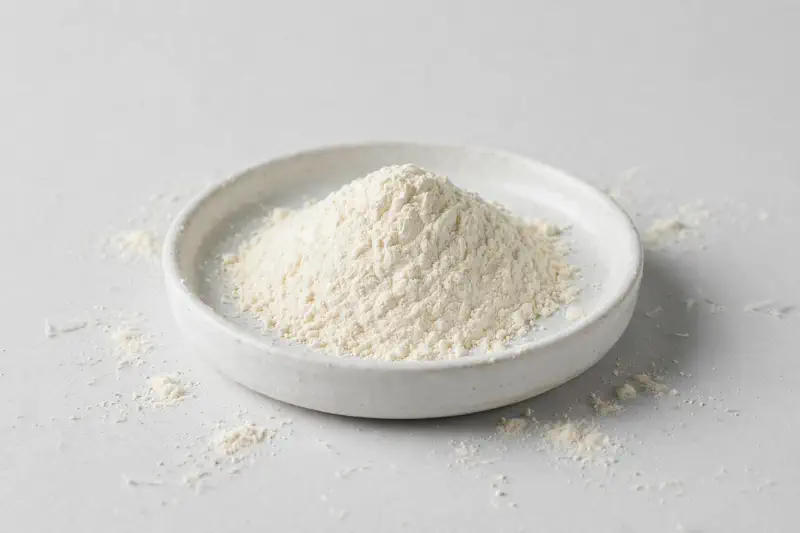

Coix Seed — a classic East Asian botanical offered as ratio extract powder for beauty-from-within and botanical-wellness formulations.

Overview
Coix Seed Extract is a water- or alcohol-extracted powder from the seed of Coix lacryma-jobi, a cereal grain long used in East Asian food and botanical traditions. Buyers commonly request 10:1 and 20:1 ratio grades for capsule, powder-blend and beverage concepts. As a Xi'an-based trading company, we source through vetted partner producers and confirm feasibility against your target specification honestly.
Specifications below reflect commonly requested options in the market — not a stock list. Share your target spec and we'll confirm exactly what we can supply, honestly.
| Specification | Details |
|---|---|
| Botanical identity | Coix seed extract powder (Coix lacryma-jobi seed) |
| Marker compound | Commonly requested spec grades: 10:1, 20:1 ratio extracts |
| Appearance | Off-white to pale cream fine powder |
| Mesh size | Typically 80–100 mesh (confirm per inquiry) |
| Testing | COA/TDS arranged on request; scope agreed per your spec |
Applications
Documentation
We don't claim in-house labs or certifications we don't hold. COA and TDS documents can be arranged on request, and testing scope is agreed against your specification before supply.
FAQ
Related products
Withania somnifera
Key marker: Withanolides
View specs →Rhodiola rosea
Key marker: Rosavins & Salidroside
View specs →Silybum marianum
Key marker: Silymarin
View specs →Isatis indigotica
Key marker: Ratio / indigotin-adjacent
View specs →Nymphaea caerulea
Key marker: 10:1 / 20:1 / 50:1
View specs →Buyer guides
Buyer’s guide
Identity, actives, heavy metals, micro — what each section of a Certificate of Analysis means, and the red flags that tell you to walk away.
Read the guide →Buyer’s guide
Section-by-section COA walkthrough — marker assays, heavy metals, micro panels, red flags, and a buyer checklist.
Read the guide →Send your target spec and volumes — we'll respond with a tailored quotation.
Request a Quote